DOĞA • GEZİ • LALADERE
Laladere’de Bir Gün
Dere, orman, yürüyüş ve doğanın ritmi üzerine görselli gezi yazısı.
TROÇKİ22 • DOĞA & GEZI
Ormanlardan vadilere, şehirlerden uzak coğrafyalara uzanan gezi notları ve fotoğraflar.
Doğa ve gezi yazıları kart halinde görünür. Karttaki “Oku” düğmesine dokunduğunda yazı açılır; geri düğmesiyle listeye dönülür.
Dere, orman, yürüyüş ve doğanın ritmi üzerine görselli gezi yazısı.
Kuşların Göç Hazırlığı Başladı — gökyüzünün görünmez yolları üzerine özel dosya.
Sarı ve kızıl sessizliğin içinde yürüyüş, kamp ve doğayla yeniden buluşma.
Emeğin kentinin ortak kalbi; gündelik hayatın, hafızanın ve karşılaşmaların meydanı.
Cilo–Sat, buzul gölleri, yaylalar, Zap Vadisi ve tarihî taş yapılarda 10 duraklık gezi.
Ormanlar, mağaralar, tarihî yapılar, göller ve Karadeniz kıyısında 11 duraklık gezi.
Göller, yaylalar, tarihî kasabalar ve Köroğlu Dağları boyunca 11 duraklık gezi.
Çoruh’tan Macahel’e, Karagöl’den Şavşat’a uzanan görselli ve ayrıntılı Artvin gezi yazısı.
Geirangerfjord’dan Bergen’e, Lofoten’den Svalbard’a uzanan 10 duraklık görselli Norveç yolculuğu.
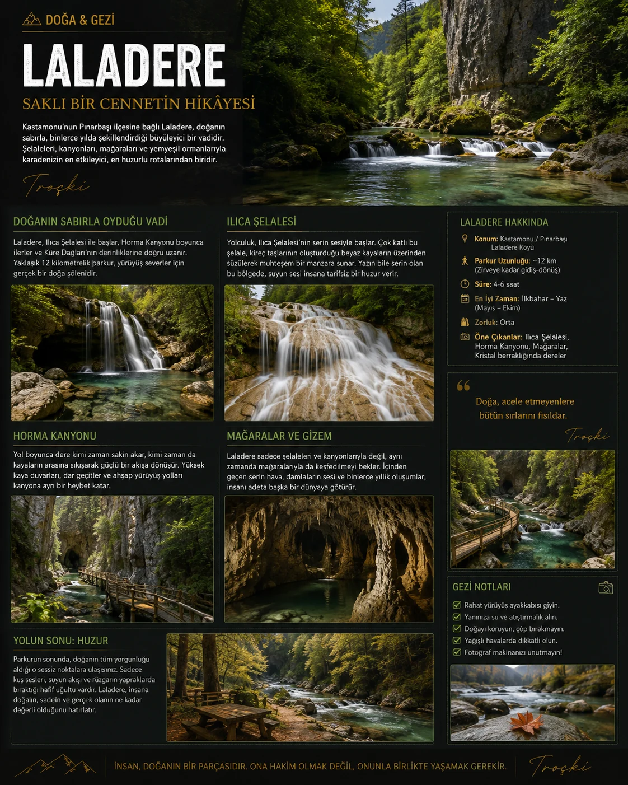
Laladere’de bir gün, yalnızca bir gezi değil; suyun, ağacın, taşın ve sessizliğin yeniden fark edildiği bir doğa yolculuğudur. Şehrin gürültüsünden uzaklaştıkça insanın çevresindeki ayrıntılar çoğalır: yaprakların arasından süzülen ışık, derenin taşlara çarpan sesi, nemli toprağın kokusu ve ormanın kendine özgü serinliği...
Laladere’nin asıl güzelliği gösterişli olmaya çalışmamasıdır. Yol boyunca doğa kendi düzenini kurar. Dere yatağındaki taşlar, kıyıdaki bitkiler, kuş sesleri ve ağaçların oluşturduğu gölge birbirine karışır. Burada yürümek, bir noktadan diğerine ulaşmaktan çok çevreyi ağır ağır okumaya dönüşür.
Suyun sesi bazen hafif bir fısıltı, bazen taşların arasından geçen daha güçlü bir akış gibidir. Bir süre sonra şehirde alıştığımız mekanik seslerin yerini tamamen bu doğal ritim alır. İnsan farkında olmadan daha yavaş yürümeye, daha dikkatli bakmaya başlar.
Bir geziyi unutulmaz yapan her zaman büyük manzaralar değildir. Bazen yosun tutmuş bir kaya, suyun üzerinde duran tek bir yaprak, eski bir ağacın gövdesi veya güneşin dallar arasından oluşturduğu ışık çizgileri bellekte çok daha uzun süre kalır. Laladere bu küçük ayrıntıları görmek isteyenler için sakin bir gözlem alanıdır.
Laladere’den ayrılırken insanın yanında götürdüğü şey yalnızca fotoğraflar değildir. Doğanın kendi başına var olan düzenini yeniden hatırlamaktır. Kent yaşamının hızı içinde unuttuğumuz basit bir gerçeği söyler bize: insan doğanın dışında değil, onun bir parçasıdır.
Belki de doğaya yaptığımız yolculukların en güzel tarafı budur. Bir yere gidiyoruz sanırken, biraz da kendimize dönüyoruz.
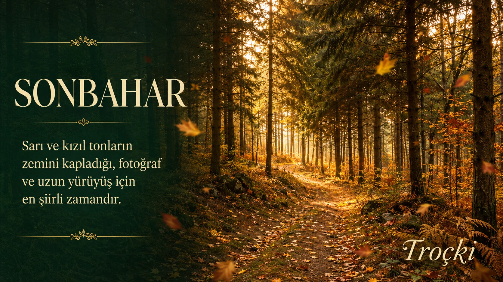
Sarı ve kızıl sessizliğin içinde bir yolculuk
Saray’dan Kıyıköy yönüne doğru ilerlerken yolun rengi yavaş yavaş değişmeye başlar. Şehrin binaları, araç sesleri ve gündelik hayatın telaşı geride kalırken ormanın koyu yeşili belirir. Sonbahar geldiğinde bu yeşile sarı, turuncu ve kızıl tonlar karışır.
Laladere’ye ulaşmak yalnızca bir mesire alanına varmak değildir. İnsan burada, birkaç saatliğine de olsa zamanın başka türlü aktığı bir dünyaya girer. Yol boyunca uzanan tarlaların düzenli çizgileri, ormanların özgür ve kıvrımlı yapısıyla birleşir. Pencereyi biraz araladığınızda içeri serin hava, nemli toprak ve dökülmüş yaprak kokusu dolar.
Sonbahar, Laladere’ye gösterişli fakat aynı zamanda dingin bir güzellik kazandırır. Ağaçların dallarında kalan son yeşil yapraklar, sararmış ve kızarmış yapraklarla yan yana durur. Orman zemini, rüzgârın taşıdığı yapraklarla doğal bir halıya dönüşür.
Her adımda kuru yaprakların çıkardığı ses duyulur. Bu ses, şehirde fark edilmeyecek kadar küçük olabilir; fakat ormanın sessizliği içinde insanın yürüyüşüne eşlik eden doğal bir müzik gibidir. Güneş, ağaç gövdelerinin arasından eğik biçimde süzülür. Kimi yerde yolu aydınlatır, kimi yerde yaprakların üzerinde altın renkli küçük lekeler oluşturur.
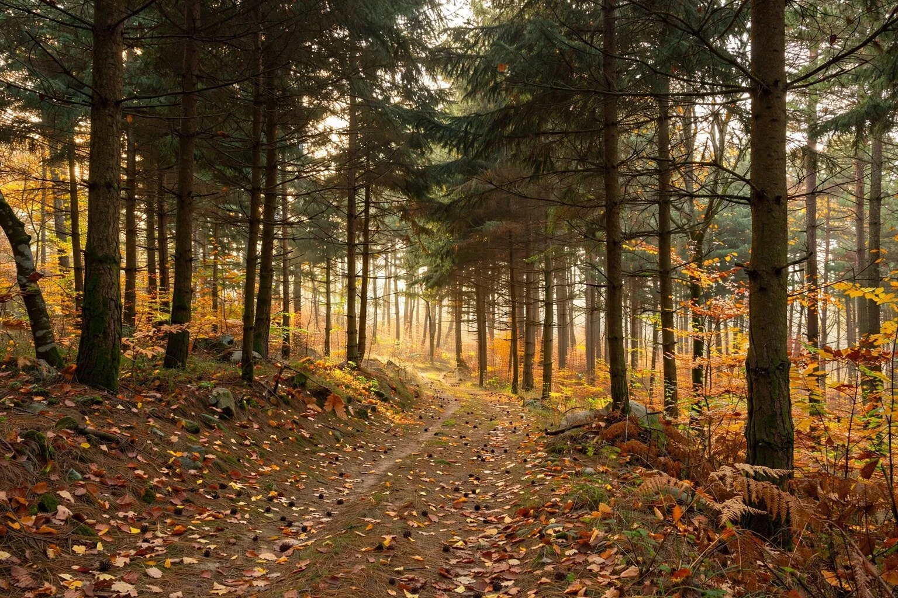
Laladere’de yapılabilecek en güzel şeylerden biri, herhangi bir yere yetişme amacı taşımadan yürümektir. Orman yolunda ilerlerken insanın adımları kendiliğinden yavaşlar. Ağaçların gövdelerine, dalların arasından görünen gökyüzüne ve yol kenarında biriken yapraklara daha dikkatli bakmaya başlar.
Gündelik yaşamda çoğu zaman yalnızca varacağımız yeri düşünürüz. Laladere’de ise yolun kendisi önem kazanır. Bazen küçük bir taşın, yosun tutmuş bir ağacın ya da rüzgârla savrulan tek bir yaprağın önünde durmak istersiniz. Burada yürümenin belirli bir amacı yoktur; yürüyüş başlı başına bir deneyime dönüşür.
Laladere, Tekirdağ’ın Saray ilçesinde, Güngörmez Mahallesi sınırlarında ve Bahçeköy yakınlarında yer alır. Saray merkezine yaklaşık 13 kilometre uzaklıktaki alan, yaklaşık 12,47 hektarlık geniş bir doğa parçasıdır.
Ahşap masa ve oturma alanları, çocuk oyun bölümleri, futbol ve voleybol sahaları ile yeme–içme imkânları bulunur. Ancak Laladere’yi değerli kılan yalnızca bu olanaklar değildir. Bir masada çayınızı içerken birkaç adım sonra ormanın içine karışabilir; kalabalıktan uzaklaşıp kendinize sessiz bir köşe bulabilirsiniz.
Sonbaharın serinliğinde ağaçların altına kurulan sade bir sofra, şehirdeki en gösterişli masalardan daha değerli gelebilir. Demlenen çayın buharı serin havaya karışır. Ekmek, peynir, zeytin ve domatesten oluşan basit bir kahvaltı bile doğanın içinde başka bir lezzet kazanır. Çünkü o sofrada yalnızca yemek değil; zaman, sohbet ve dostluk da paylaşılır.
Laladere’nin sonbahar atmosferine kamp düşüncesi de çok yakışır. Çadırınızı ağaçların altında kurup geceyi ormanın sessizliği içinde geçirmek, sabahı kuş sesleriyle karşılamak unutulmaz bir deneyim olabilir. Akşam hava serinlediğinde dostlarla bir araya gelmek ve sıcak bir içecek eşliğinde uzun sohbetlere dalmak insana şehirde unuttuğu bir yakınlık duygusu verir.
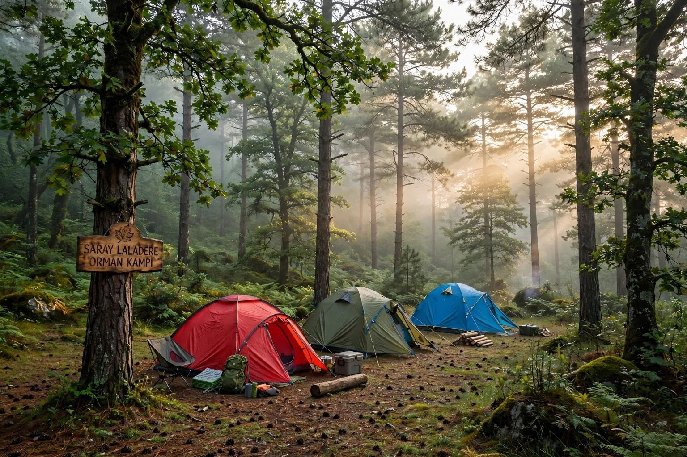
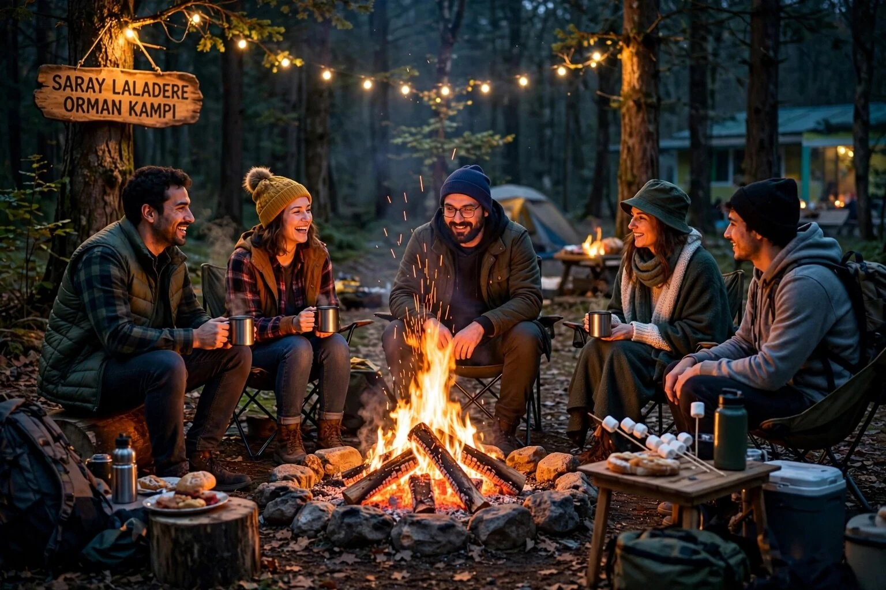
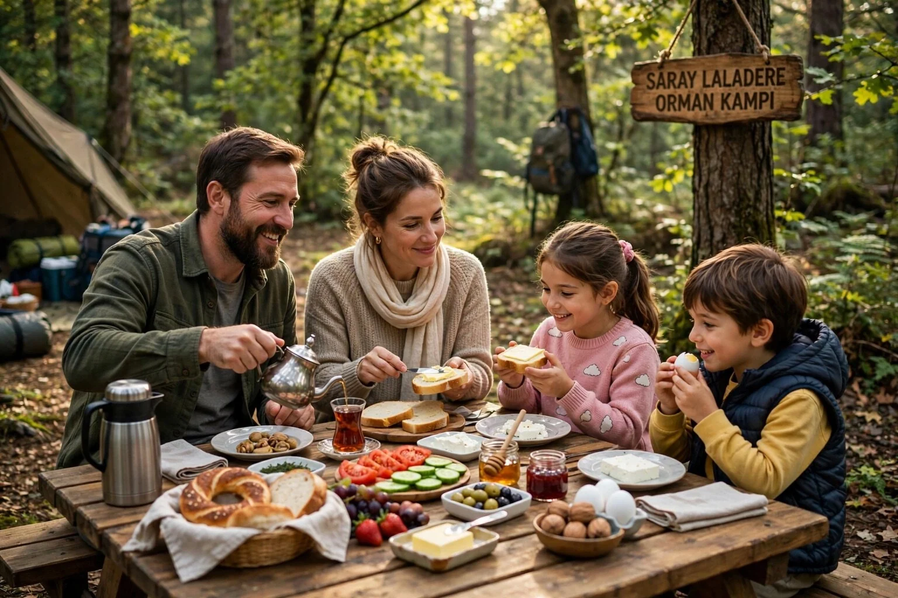
Fakat orman ateş yakmak için sınırsız bir alan değildir. Ateş yalnızca izin verilen, güvenli bölümlerde ve gerekli önlemler alınarak kullanılmalıdır. Kamp, ateş ve araçla giriş koşulları dönemsel olarak değişebileceği için yola çıkmadan önce güncel bilgi alınmalıdır.
Laladere’nin adı da bölgenin doğası kadar ilgi çekicidir. Yerel rivayete göre Osmanlı döneminde padişahlar bu bölgeye avlanmaya gelir ve ava çıkarken lalalarını burada bırakırlarmış. Bölgenin adı zamanla bu anlatının izini taşıyarak “Laladere” olmuş.
Bu hikâyeyi kesin bir tarihsel belge olarak değil, kuşaktan kuşağa aktarılan yerel bir anlatı olarak değerlendirmek gerekir. Yine de ormanın içinde yürürken geçmişte aynı yollardan geçen insanları hayal etmek Laladere’ye başka bir anlam kazandırır.
Ben Laladere’ye en çok sonbaharı yakıştırıyorum. Sonbahar çoğu zaman hüzünle ilişkilendirilir. Oysa doğada sonbahar yalnızca bir bitiş değildir; aynı zamanda yeni yaşamın hazırlanma dönemidir.
Dalından ayrılan yaprak yok olmaz. Toprağa karışır, çürür ve başka canlıların yaşamına katılır. Doğa, ölüm ile yaşam arasına kesin duvarlar örmez. Her şeyi sürekli değişen büyük bir döngünün içinde birleştirir. Belki de sonbaharın güzelliği tam olarak buradadır: Bize her değişimin bir kayıp olmadığını anlatır.
Laladere’nin gerçek zenginliği tesisleri değil, yaşayan ekosistemidir. Ağaçlar, kuşlar, böcekler, küçük memeliler, bitkiler ve su kaynakları bu alanın gerçek sahipleridir. Bizler ise onların yaşam alanına kısa süreliğine gelen misafirleriz.
Doğayı sevmek yalnızca güzel manzaralar karşısında fotoğraf çekmek değildir. Çöplerimizi toplamak, yüksek sesle çevredeki canlıları rahatsız etmemek, bitkilere zarar vermemek ve doğanın bizden sonra da yaşayabilmesini gözetmektir.
Akşam yaklaştığında güneş ağaç gövdelerinin arasından son kez görünür. Ormanın içindeki ışık azalır, hava biraz daha serinler ve dönüş vakti gelir. Laladere’den ayrılırken yanınıza yalnızca çektiğiniz fotoğrafları almazsınız. Üzerinize sinen toprak kokusu, yaprakların altında yürürken çıkan ses ve birkaç saat boyunca yavaşlamış olmanın verdiği dinginlik de sizinle gelir.
Belki de iyi bir gezi, bize ne kadar çok yer gördüğümüzü değil, bir yerde ne kadar derinden durabildiğimizi hatırlatır. Laladere bunun için güzel bir duraktır: Yakın, sade, sarı ve kızıl renklerle süslenmiş; insana kendi iç sesini yeniden duyuracak kadar sakin…
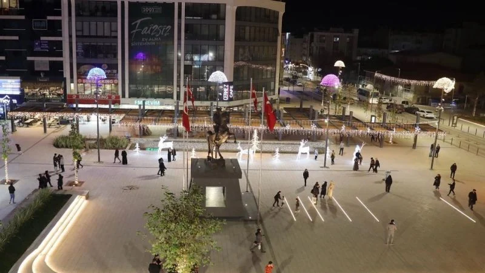
Emeğin kentinin ortak kalbi
Akşam Çerkezköy’e indiğinde Belediye Meydanı’nın yüzü değişir. Işıklar yanar, Atatürk Anıtı karanlığın içinde belirginleşir; işten çıkanlar, gençler, çocuklar ve bir soluklanmak isteyenler aynı açıklıkta buluşur. Kentin aceleci ritmi burada birkaç dakika olsun yavaşlar.
Bir meydanı anlamak için yalnızca taşlarına, banklarına ya da ışıklarına bakmak yetmez. Asıl hikâye, oradan geçen insanların adımlarında; verilen buluşma sözlerinde, kutlanan bayramlarda ve gündelik hayatın küçük karşılaşmalarında saklıdır. Çerkezköy Belediye Meydanı da tam bu nedenle boş bir alan değil, yaşayan bir kent hafızasıdır.
Şehirler bazen en iyi meydanlarından okunur. Çünkü meydan, kentin kendisini saklamadan gösterdiği yerdir. Sabahın erken saatlerinde işe yetişenlerin telaşı, öğle arasında kısa bir mola verenlerin sessizliği, akşam buluşan dostların neşesi aynı zeminde üst üste gelir.
Çerkezköy’ün merkezindeki bu ortak alanın gerçek sahipleri de onu her gün kullanan insanlardır. Kimisi için adres tarifinin başlangıcı, kimisi için törenlerin sahnesi, kimisi için çocukluk anılarının değişmeyen fonudur.
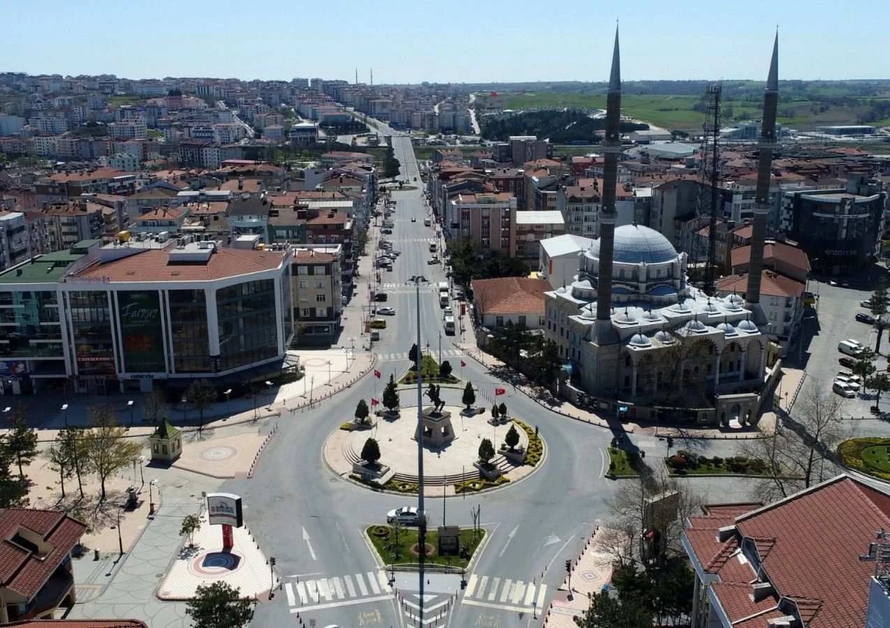
Çerkezköy’ün bilinen yerleşim hikâyesi 19. yüzyılın ortalarına uzanır. Resmî ilçe tarihçesinde bölgedeki yaşamın 1847–1848 yıllarında başladığı, yerleşimin bir dönem Türbedere adıyla anıldığı ve 1911’de nahiye ile belediye teşkilatının kurulduğu aktarılır. Zaman içinde gelen göçler, sanayileşme ve emek, kentin karakterini belirledi.
Bugün “Emeğin Kenti” sözü Çerkezköy’ü yalnızca ekonomik yapısıyla değil, farklı yerlerden gelip burada ortak bir hayat kuran insanlarla da anlatır. Belediye Meydanı, bu hareketli toplumsal hikâyenin merkezdeki görünür yüzüdür.
Meydanın en güçlü simgelerinden biri Atatürk Anıtı’dır. Gündelik hayatın akışı içinde sessizce duran anıt, ulusal bayramlarda ve anma günlerinde törenlerin odağına dönüşür. Çelenkler bırakılır, İstiklâl Marşı söylenir; farklı kuşaklar aynı hafızanın çevresinde yan yana gelir.
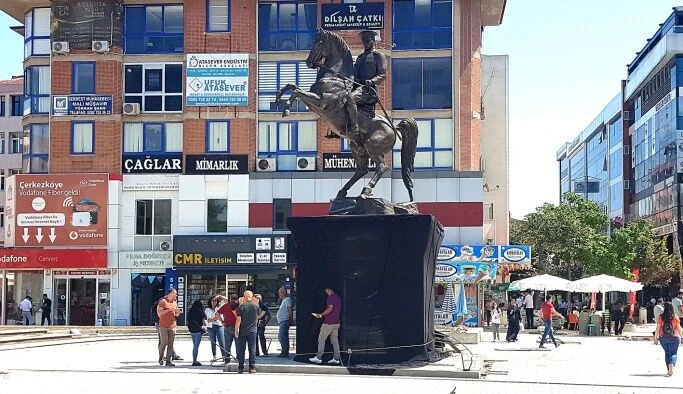
Çerkezköy büyüdükçe merkezinin ihtiyaçları da değişti. Belediyenin meydan dönüşümü için kamuoyuna duyurduğu projede yeşil alanlar, bisiklet yolları, çağdaş aydınlatma, erişilebilir kaldırımlar ve yer altı otoparkı gibi başlıklar öne çıkarıldı. Bu yaklaşım, meydanı yalnızca araçların çevresinden geçtiği bir kavşak olmaktan çıkarıp insanların vakit geçirebildiği bir kamusal alana dönüştürme arzusunu gösteriyordu.
İyi bir meydan yalnızca güzel görünmez; yürümeyi kolaylaştırır, dinlenmeye yer açar ve farklı yaşlardan insanları dışlamadan bir araya getirir. Kentsel tasarımın gerçek başarısı da günlük yaşamda hissedildiği ölçüde anlam kazanır.
Sabah meydanda hızlı adımlar vardır. Servise yetişen işçiler, okula giden öğrenciler ve kepenklerini açan esnaf kentin gününü başlatır. Öğle saatlerinde tempo biraz düşer. Akşam olduğunda ise meydan daha sosyal bir çehreye bürünür; banklarda sohbetler uzar, çocukların sesi duyulur, ışıklar kentin sert çizgilerini yumuşatır.
Meydan, resmî törenlerden çocuk şenliklerine ve halk oyunlarına kadar kentin ortak duygusunu görünür kılan buluşmalara ev sahipliği yapar. Böyle günlerde gündelik hayatın alışılmış akışı değişir; müzik, bayraklar, kostümler ve kalabalık meydanı büyük bir açık hava sahnesine dönüştürür.
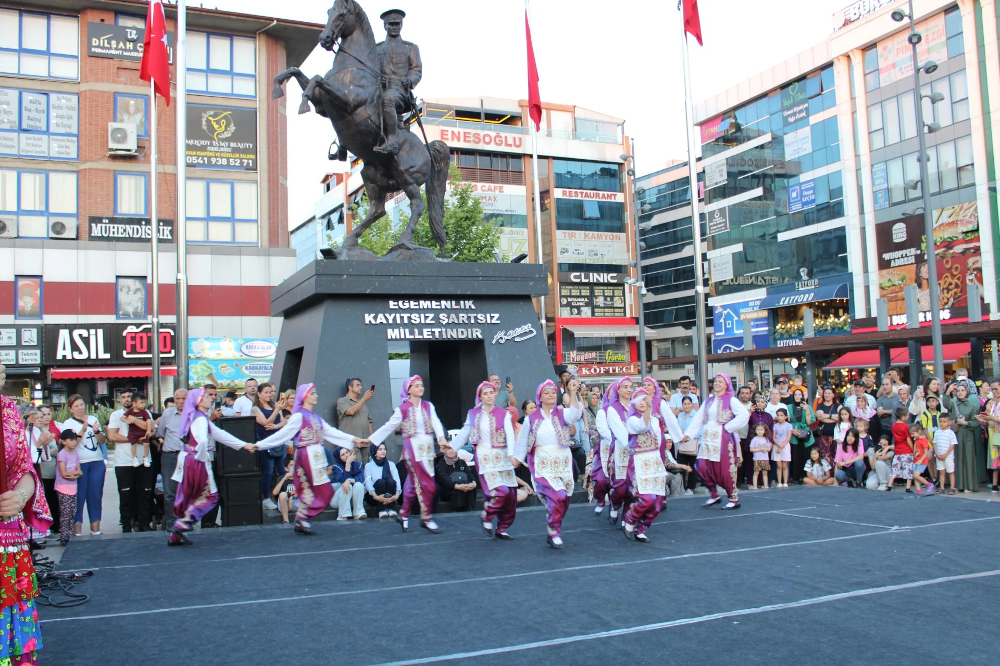
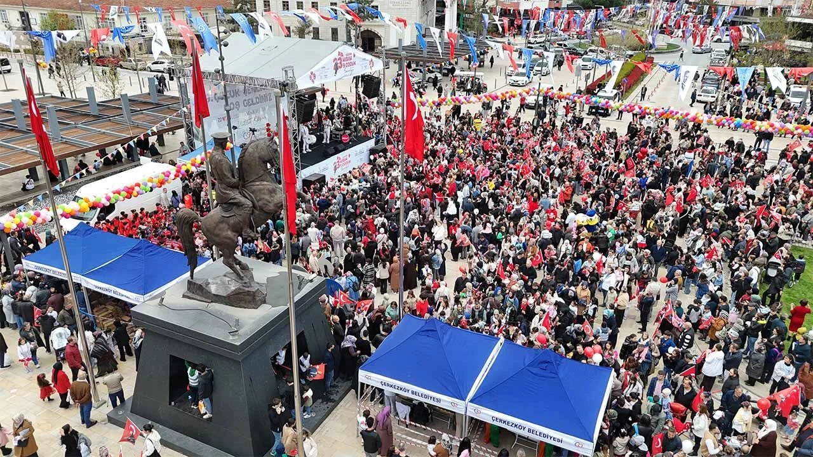
Kamusal alan, herkesin eşit biçimde var olabildiği ölçüde değerlidir. Gölgesinde dinlenilebilen bir ağaç, ücretsiz bir kültür etkinliği, sokak müziği, kitapla oturulabilecek sakin bir köşe ya da çocukların güvenle oynayabildiği bir açıklık; meydanı gerçek anlamda halkın yapar.
Bu yüzden bir kent meydanı yalnızca mimarların çizdiği bir proje değildir. İnsanların onu nasıl kullandığıyla, birbirine ne kadar yaklaşabildiğiyle ve kent yaşamına ne kadar özgürce katılabildiğiyle tamamlanır.
Gece ilerledikçe kalabalık seyrelir. Birkaç sohbet daha tamamlanır, son fotoğraflar çekilir ve insanlar evlerine doğru dağılır. Meydan sessizleşir; ama hafızası yerinde kalır. Ertesi sabah yeni adımlar, yeni karşılaşmalar ve yeni hikâyelerle yeniden dolacaktır.
Çerkezköy Belediye Meydanı bize basit bir gerçeği hatırlatır: Kent, yalnızca binalardan ve yollardan oluşmaz. Asıl kent, insanların birbirini gördüğü, birlikte sevindiği ve ortak bir hayata dokunduğu yerde başlar.
Türkiye’nin güneydoğu ucunda, dağların gökyüzüne doğru yükseldiği, vadilerin kilometrelerce uzandığı ve yükseklerde buzulların izlerinin görüldüğü olağanüstü bir coğrafya vardır: Hakkâri.
Bu yolculukta Cilo–Sat’tan Sat Buzul Gölleri’ne, Cennet–Cehennem Vadisi’nden Berçelan’a, Zap Vadisi’nden Meydan Medresesi ve Çukurca’nın taş evlerine kadar doğa ile tarihin birbirine karıştığı on durağı sırayla geziyoruz.
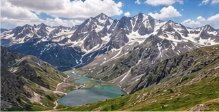
Hakkâri denildiğinde zihinde ilk beliren manzara Cilo–Sat Dağlarıdır. Sarp zirveler, yüksek vadiler, kar alanları ve buzul şekilleri bu bölgeyi Türkiye’nin en etkileyici yüksek dağ coğrafyalarından biri hâline getirir. Dağların arasında ilerledikçe yerleşimlerin sesi azalır; kaya, rüzgâr ve gökyüzü yolculuğun ana unsurları olur. Cilo–Sat’ı görmek, Hakkâri’nin doğal karakterini anlamanın en güçlü başlangıçlarından biridir.
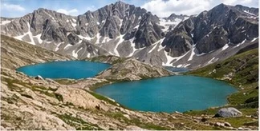
Sat Dağları’nın yüksek kesimlerinde bulunan buzul gölleri, gri kayalıkların arasında turkuaz ve mavi tonlarıyla belirir. Kısa yaz mevsiminde çevredeki çayırlar canlanırken yükseklerde kar parçaları görülebilir. Göllerin çevresi, yüksek dağ doğasının yalınlığını ve sessizliğini en güçlü biçimde hissettiren alanlardan biridir.
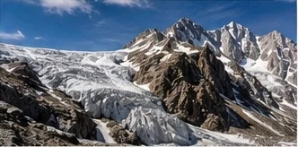
Cilo buzulları, Hakkâri’nin jeolojik hafızasının en etkileyici parçalarındandır. Bu buz kütleleri, yüzyıllar boyunca biriken karın, yüksekliğin ve iklim koşullarının ortak ürünüdür. Onları yalnızca güzel bir manzara olarak değil, iklim tarihini taşıyan doğal arşivler olarak görmek gerekir. Buzul alanlarında güvenlik kurallarına uymak ve hassas doğayı korumak büyük önem taşır.
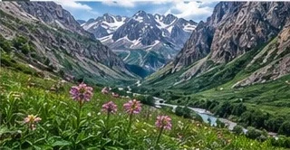
Cennet–Cehennem Vadisi, Hakkâri’nin çarpıcı karşıtlıklarını aynı manzarada toplar. Vadinin bir tarafında sert kaya ve kar dokusu, diğer tarafında yeşil çayırlar ve çiçekler görülür. Bu nedenle vadi, adını çağrıştıran dramatik bir karaktere sahiptir. Fotoğrafçılık ve doğa yürüyüşü açısından Hakkâri’nin en etkileyici duraklarından biridir.
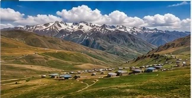
Berçelan Yaylası, yüksek dağların sert görüntüsünden sonra daha yumuşak bir peyzaj sunar. Geniş otlaklar, su kaynakları ve açık yayla manzaraları burada öne çıkar. Yaz aylarında yayla yaşamı canlanır; doğa yürüyüşü ve manzara seyri için bölgenin en güzel duraklarından biri hâline gelir.
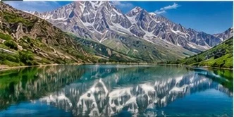
Dağların arasında saklanan Seyithan Gölü, Hakkâri’nin en sakin ve şiirsel görüntülerinden birini sunar. Göl yüzeyinde çevredeki dağların ve gökyüzünün yansıması görülür. Burada manzara, insanı hızını azaltmaya ve sessizliği dinlemeye davet eder.
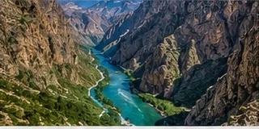
Zap Vadisi, Hakkâri coğrafyasını yararak ilerleyen güçlü bir doğal koridordur. Sarp kaya duvarları, nehir, köprüler ve dağ yolları vadinin karakterini belirler. Yolculuk boyunca her virajda farklı bir manzara açılır. Hakkâri’de yolun kendisinin de gezinin bir parçası olduğunu en iyi anlatan yerlerden biridir.
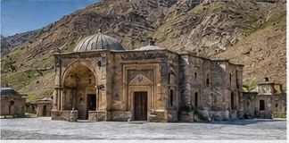
Hakkâri merkezdeki Meydan Medresesi, kentin tarihî kimliğinin en önemli yapılarındandır. Taş işçiliği, avlulu planı ve geleneksel mimarisiyle bölgenin eğitim ve kültür tarihine ışık tutar. Yüksek dağların çevrelediği Hakkâri’de bu yapı, doğal mirasla kültürel mirasın yan yana varlığını güçlü biçimde hissettirir.
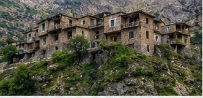
Çukurca’daki taş evler, mimarinin coğrafyaya nasıl uyum sağlayabileceğinin güzel örnekleridir. Yamaçlara kurulan çok katlı taş yapılar, dar sokaklar ve geleneksel doku, ilçeye kendine özgü bir görünüm kazandırır. Burada taş yalnızca yapı malzemesi değil, yaşam biçiminin bir parçasıdır.
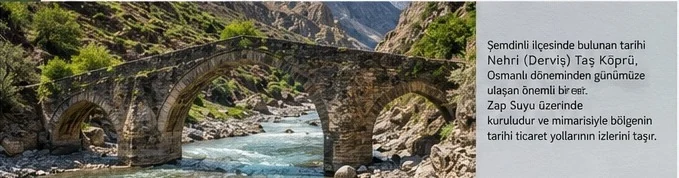
Şemdinli çevresindeki Nehri Taş Köprü, su, taş ve dağ peyzajının birleştiği tarihî bir duraktır. Kemerli taş yapı, çevresindeki vadiyle birlikte güçlü bir bütünlük oluşturur. Hakkâri yolculuğunu burada tamamlamak, doğadan tarihe uzanan rotanın simgesel bir finali gibidir.
Hakkâri’den geriye yalnızca fotoğraflar kalmaz. Büyük dağların arasında insan kendi ölçeğini yeniden fark eder. Buzullar zamanın uzunluğunu, taş köprüler geçmişin yakınlığını, yaylada açan çiçekler ise yaşamın direncini anlatır.
Hakkâri’ye yolunuz düşerse acele etmeyin. Cilo’nun karşısında durun, Sat Gölleri’ni seyredin, Berçelan’da rüzgârı dinleyin, Zap’ın yanında biraz yürüyün ve tarihî taş yapılara uzun uzun bakın. Çünkü bazı coğrafyalar yalnızca gezilmez; yaşanır.
Troçki
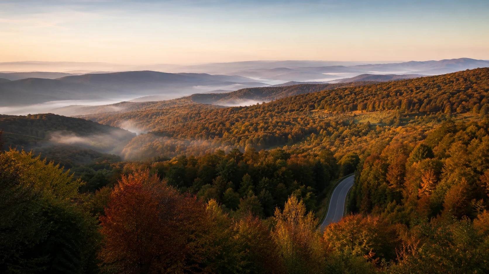
Taşın hafızasından mağaranın karanlığına, Karadeniz kıyısından su basar ormanların sessizliğine uzanan on bir duraklık bir Trakya yolculuğu.
Kırklareli’ne doğru yol alırken manzara, gürültüsünü yavaş yavaş geride bırakır. Ergene’nin geniş düzlükleri kuzeye doğru yükselir; ufukta Yıldız Dağları, yani Istrancalar belirir. Bir süre sonra yolun iki yanını meşe ve kayın ağaçları sarar. Dereler ormanın içinde kaybolur, hava serinler ve Karadeniz’in nemi yapraklara siner. Bu coğrafyada doğa ile tarih ayrı ayrı durmaz: eski taşların arasından otlar çıkar, orman bir dökümhanenin duvarlarını kuşatır, göller denizle kum tepeleri üzerinden sessizce konuşur.
Kırklareli’nin güzelliği gösterişli olmaktan çok derindir. Kent merkezindeki erken Osmanlı eserlerinden Vize’nin antik katmanlarına, Kıyıköy’ün kaya manastırından Demirköy’ün sanayi mirasına ve İğneada’nın longozlarına kadar her durak, başka bir zamanın kapısını açar. Bu yazı, o kapılardan acele etmeden geçmek için hazırlanmış bir rota; taşın, suyun ve ormanın birbirine eklediği uzun bir gezi anlatısıdır.
Hızırbey Külliyesi → Istranca Ormanları → Dupnisa Mağarası → Vize → Kıyıköy → Aya Nikola Manastırı → Fatih Demir Dökümhanesi → İğneada Longozları → Mert Gölü → İğneada Sahili → Limanköy Feneri
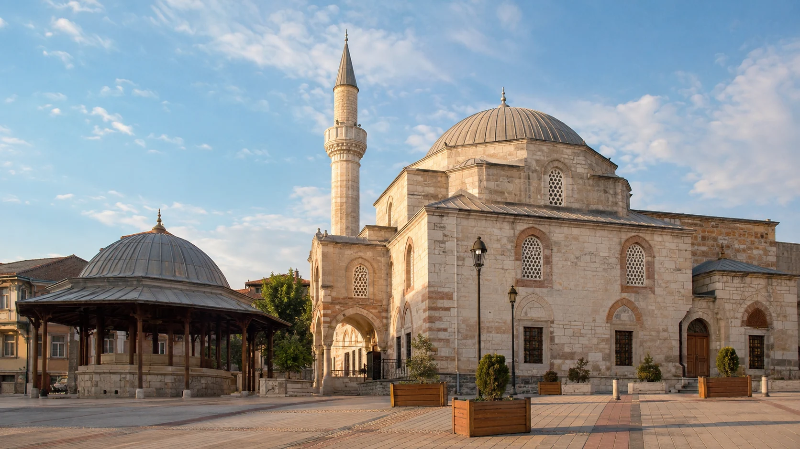
Kırklareli yolculuğuna şehrin merkezinden başlamak, ilin tarihini daha ilk adımda hissetmek demektir. Çarşının içindeki Hızırbey Camii, arasta ve hamamla birlikte eski kent yaşamının nasıl örgütlendiğini gösteren bir odak noktasıdır. Dükkânların, meydanın ve gündelik hayatın arasında yükselen taş yapı, bir anıt gibi uzak durmaz; şehrin akışına karışır.
1383 yılında Hızır Bey tarafından yaptırılan cami, erken Osmanlı mimarisinin sade fakat güçlü çizgilerini taşır. Kesme taş yüzeyler, kubbe ve tek şerefeli minare; yüzyıllar boyunca onarımlar görmüş bir yapının dirençli hikâyesini anlatır. Burada yalnızca bir binaya bakılmaz. Caminin çevresinde biraz yavaşlayınca ticaret, ibadet, buluşma ve dinlenme mekânlarının aynı şehir dokusunda nasıl bir araya geldiği görülür.
Bu ilk durak, Kırklareli’nin temel karakterini de haber verir: doğaya çıkmadan önce taşın hafızasına dokunmak. Birkaç saat sonra ormanın içinde kaybolacak yolcu için Hızırbey Külliyesi, insan elinin zamana bıraktığı ilk işarettir.
Kırklareli’nin kuzey ve kuzeydoğusunda yükselen Istrancalar, yalnızca bir dağ sırası değildir; ilin suyunu, iklimini ve yaşam ritmini belirleyen geniş bir ekolojik omurgadır. Güneyde Ergene Havzası’na açılan düzlüklerle kuzeyde Karadeniz etkisindeki nemli yamaçlar arasında güçlü bir geçiş kurar. Bu nedenle kısa bir yolculuk içinde bile bitki örtüsünün ve havanın değiştiği hissedilir.
Orman yollarında meşe, kayın ve gürgen dokusu birbirine karışır. Sonbaharda sarıdan bakıra, kızıla ve koyu kahverengiye uzanan renkler toprağı ve yamaçları kaplar. İlkbaharda ise dereler çoğalır, yosunlar belirginleşir ve orman daha kapalı, daha serin bir dünyaya dönüşür. Burada yürümek, bir manzarayı seyretmekten çok onun içine girmektir; kuş sesi, ıslak yaprak kokusu ve suyun uzaktan gelen uğultusu rotanın gerçek işaretleridir.
Istranca’da en değerli davranış, iz bırakmadan ilerlemektir. Yol kenarındaki küçük bir su gözü, çürümeye bırakılmış devrilmiş bir ağaç ya da sessiz bir dere yatağı, orman ekosisteminin parçasıdır. Fotoğraf çekmek için dalları kırmadan, ateş yakmadan ve yaban hayatına yaklaşmadan gezmek, bu güzelliğe verilebilecek en anlamlı karşılıktır.
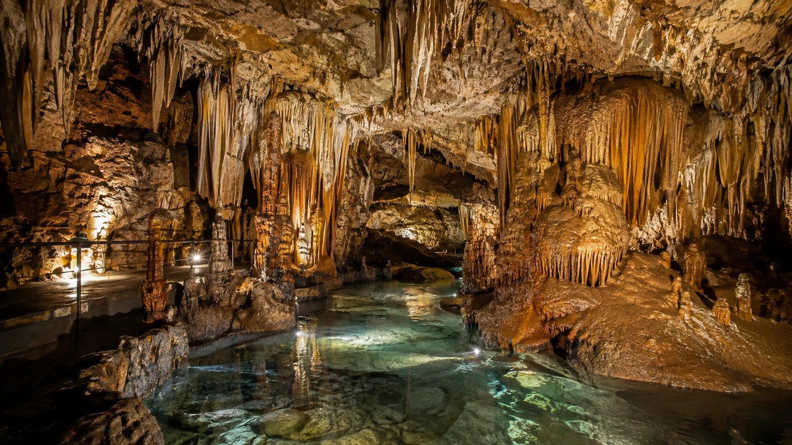
Istranca’nın derin vadileri arasındaki Dupnisa’ya yaklaştıkça yol, ormanın daha tenha bir bölümüne girer. Mağaranın ağzında dış dünyanın yeşili bir anda kesilir; serinlik, nem ve taş kokusu öne çıkar. İçerideki sarkıtlar, dikitler, sütunlar ve damlataş havuzları, suyun kayayı sabırla biçimlendirdiği çok uzun bir zamanı görünür kılar.
Dupnisa tek bir boşluktan değil, üst ve alt seviyeleri bulunan büyük bir mağara sisteminden oluşur. Alt bölümdeki Sulu Mağara’dan sürekli bir yeraltı nehri geçerken üst seviyede Kuru ve Kız mağaraları yer alır. Aydınlatılan yürüyüş bölümünde ilerlerken damlaların sesi duvarlardan yankılanır; mağaranın karanlığı, korkudan çok saygı uyandırır.
Burası aynı zamanda önemli bir canlı yaşam alanıdır. Yarasa kolonilerinin mevsimsel döngüsünü korumak amacıyla bazı bölümlere ve dönemlere ilişkin erişim sınırlandırmaları uygulanır. Bu yüzden gezi öncesinde resmî duyuruları kontrol etmek, kapalı bölümlere girmemek ve sessizliği korumak gerekir. Dupnisa’nın güzelliği, yalnızca ziyaret edilebilir oluşunda değil; kendi doğal ritmini sürdürebilmesindedir.
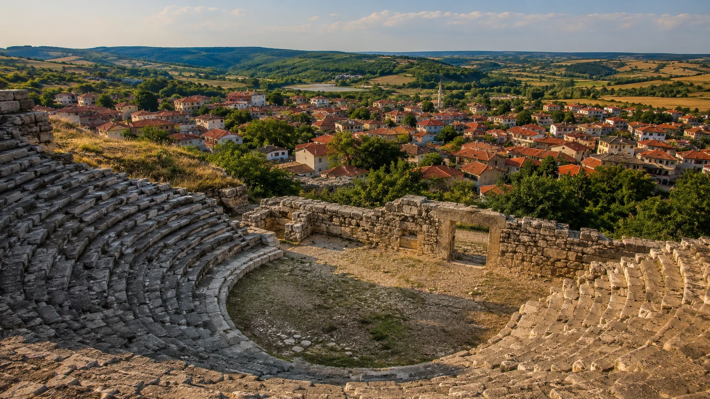
Vize’ye girdiğinizde küçük bir Trakya ilçesinden fazlasıyla karşılaşırsınız. Antik tiyatro, kale kalıntıları, tümülüsler ve sonraki dönemlerin yapıları aynı çevrede yan yana durur. Şehrin bugünkü sokakları, Trak, Roma, Bizans ve Osmanlı dönemlerinin üst üste bıraktığı izlerin arasından geçer.
Antik tiyatronun taş sıralarında durup çevreye bakmak, geçmişi bir müze vitrininin arkasından izlemekten farklıdır. Rüzgâr, otlar ve günlük hayat arkeolojik kalıntıların arasına karışır. Bir zamanlar sesin ve kalabalığın doldurduğu bu yapı, bugün sessizliğiyle etkiler. Yakındaki Vize Kalesi ve Gazi Süleyman Paşa Camii olarak kullanılan Küçük Ayasofya yapısı, kentin farklı dönemlerini aynı yürüyüş içinde okumayı mümkün kılar.
Vize’yi hızlıca geçilecek bir yol üzeri durağı olarak görmek haksızlık olur. Dar sokaklarda yürümek, eski taş duvarların ayrıntılarına bakmak ve ilçenin çevresindeki yumuşak tepeleri seyretmek için zaman ayırınca, Trakya tarihinin başkentlerden uzakta nasıl yaşadığını daha iyi anlarsınız.
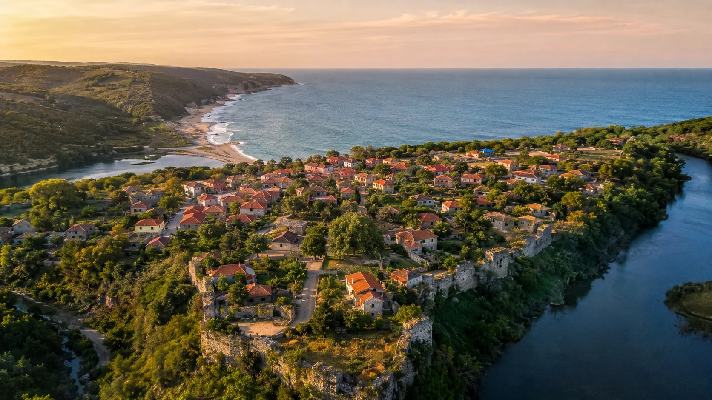
Kıyıköy, coğrafyanın kasabanın biçimini açıkça belirlediği yerlerden biridir. Kuzeyindeki Pabuçdere ile güneyindeki Kazandere, yeşil vadiler boyunca ilerleyip Karadeniz’e ulaşır; yerleşim bu iki su arasında, denize hâkim kayalık bir yükselti üzerinde durur. Yukarıdan bakıldığında kırmızı çatılar, orman, dere ve kıyı tek bir manzaranın parçaları olur.
Kasabanın içindeki sur kalıntıları ve eski evler, kıyı yaşamına tarihî bir fon verir. Limana doğru inerken balıkçı tekneleri, rüzgârın taşıdığı iyot kokusu ve dalga sesi öne çıkar. Bir tarafta uzun kumsal, diğer tarafta dere kıyıları bulunur. Kıyıköy’ü özel kılan da bu çeşitliliktir: aynı gün içinde taş sokakta yürümek, orman kenarında dinlenmek ve Karadeniz’in sert ufkunu seyretmek mümkündür.
Günün en güzel saatleri sabahın erken zamanı ile akşamüstüdür. Kalabalık azaldığında kasabanın gerçek ritmi duyulur. Kıyıya inen patikalarda yürürken yamaçları ve dere ağızlarını korumak, çöp bırakmamak ve doğal sit alanlarının sınırlarına uymak bu kırılgan peyzaj için önem taşır.
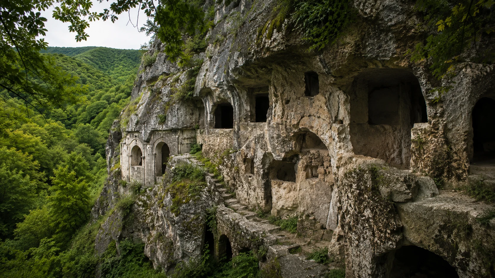
Kıyıköy’den Pabuçdere yönüne ilerlediğinizde orman içindeki yamaç, insan eliyle kayaya açılmış odalar ve geçitlerle değişmeye başlar. Aya Nikola Manastırı, bulunduğu doğal çevreden ayrı düşünülemeyen bir Bizans dönemi kaya yapısıdır. Dışarıdan bakıldığında taşın devamı gibi görünür; yaklaştıkça kilise, ayazma ve keşiş hücrelerinin izleri seçilir.
Yapının zemin katında kilise bölümü, daha aşağıda ayazma, üst kısımlarda ise keşişlere ayrılmış mekânlar bulunur. Kayaya oyulmuş merdivenler ve hücreler, burada sürdürülen inziva hayatının fiziksel çerçevesini gösterir. Zamanın ve doğanın aşındırdığı yüzeylere dokunmadan bakmak, mekânın sessizliğini bozmamak gerekir.
Manastırın asıl etkisi gösterişli süslemelerden değil, taş ile boşluk arasındaki ilişkiden doğar. İçeri sızan ışık, duvarların pürüzlerini belirginleştirir; dışarıdaki ormanın sesi mağaranın serinliğine karışır. Kıyıköy’ün canlı kıyısından yalnızca kısa bir mesafe uzakta olmasına rağmen burası, başka bir zaman duygusu yaratır.
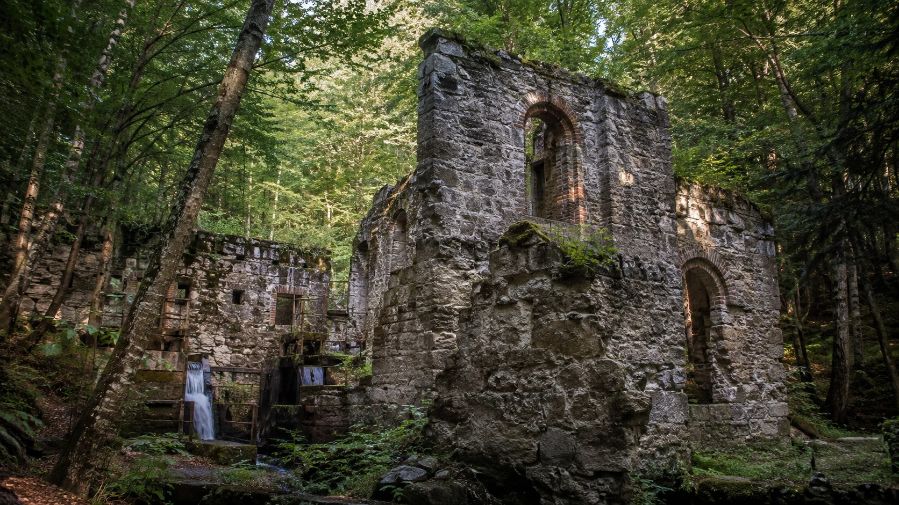
Demirköy’ün güneydoğusundaki ormanlık alanda yükselen dökümhane kalıntıları, Kırklareli yolculuğunun en şaşırtıcı duraklarından biridir. Yoğun ağaçların arasında görülen taş duvarlar ve kemerler, burada bir zamanlar büyük bir üretim düzeninin çalıştığını hatırlatır. Doğa bugün yapıyı yeniden kuşatmış olsa da endüstriyel geçmişin izi silinmemiştir.
Osmanlı döneminde Tophane-i Âmire işletmeleriyle bağlantılı çalışan bu tesiste savaş ve gemi yapımında kullanılan demir aksamın bir bölümü üretiliyordu. Resmî kaynaklar, İstanbul’un fethinde kullanılan toplara ait bazı güllelerin burada döküldüğünü aktarır. Üretimde su gücünden yararlanılması, yer seçiminin orman, akarsu ve maden kaynaklarıyla nasıl ilişkili olduğunu gösterir.
Dökümhane, yalnızca askerî tarihin değil, emek ve teknoloji tarihinin de parçasıdır. Taşı, suyu, ateşi ve insan emeğini aynı üretim sürecinde birleştiren bu yer; ormanın ortasında kurulmuş eski bir sanayi kompleksinin ne kadar gelişmiş olabileceğini düşündürür. Kalıntılar arasında dolaşırken, sessizliğin altında çekiç ve su seslerini hayal etmek zor değildir.
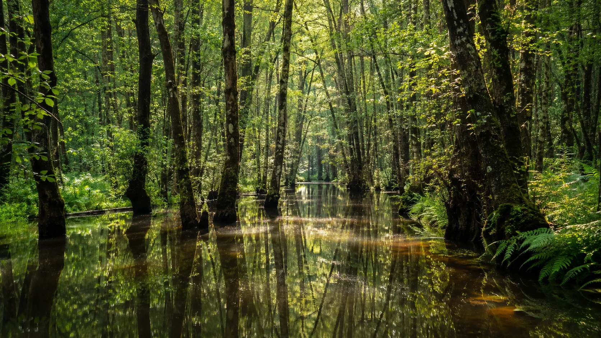
İğneada’ya yaklaşırken orman yalnızca sıklaşmaz; suyla birlikte başka bir biçime dönüşür. Longoz, yağışlı dönemlerde tabanı su altında kalan ormandır. Ağaç gövdeleri durgun suyun içinden yükselir, kökler sazlık ve çamurlu zeminle birleşir, gökyüzü koyu yeşil bir aynada tekrar görünür. Burada kara ile su arasındaki sınır kesin değildir.
2007 yılında millî park ilan edilen İğneada Longoz Ormanları; güneyde Saka, Deniz, Hamam, Pedina ve Mert gölleriyle çevrelerindeki sazlık ve su basar ormanları, kuzeyde ise Erikli Gölü ve çevresini kapsar. Bu farklı habitatların birbirine yakınlığı, bölgeyi bitkiler, kuşlar ve diğer canlılar için son derece değerli kılar.
Longozu anlamanın en iyi yolu, belirlenmiş yürüyüş yollarında sessizce ilerlemektir. Su seviyesine, mevsime ve koruma çalışmalarına bağlı olarak bazı güzergâhlar değişebilir. Ağaçların arasına kontrolsüz biçimde girmek, sazlıkları ezmek ya da yaban hayatına yaklaşmak yerine ziyaretçi merkezinden güncel bilgi almak gerekir. Çünkü burası yalnızca güzel bir fotoğrafın fonu değil, canlı ve hassas bir ekosistemdir.
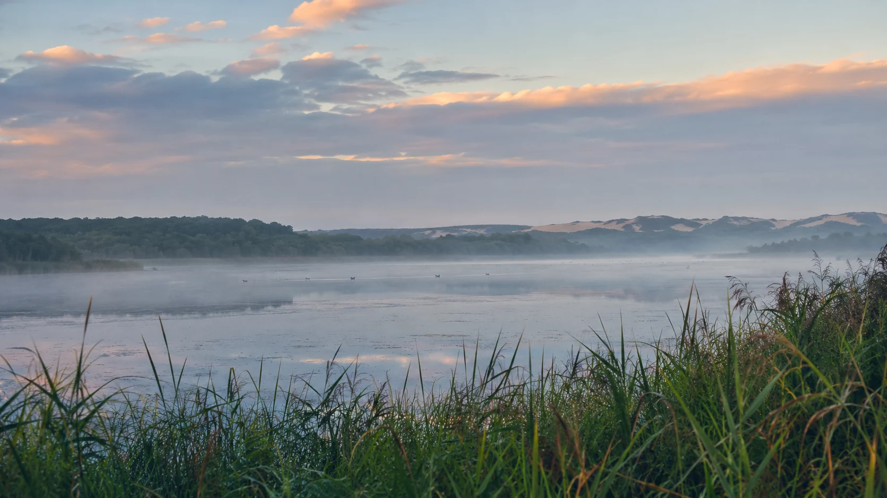
Mert Gölü, İğneada’nın güneyinde, orman ile kıyı kumulları arasında uzanan sakin bir lagün dünyasıdır. Su yüzeyi rüzgârsız bir sabah gökyüzünü eksiksiz yansıtır; sazlıkların arasından kuş sesleri gelir. Birkaç yüz metre ötede Karadeniz dalgaları duyulsa da gölün ritmi daha yavaş ve daha içe dönüktür.
Gölün denizle ilişkisi mevsimlere göre değişir. Kış döneminde kuzey yönündeki açıklıktan Karadeniz’e bağlanabilir; yazın kum birikimi bu bağlantıyı kesebilir. Deringeçit Deresi gölü besler, çevresindeki sazlık ve bataklık alanların hemen arkasında longoz ormanı başlar. Bu geçişler Mert Gölü’nü tek başına bir manzaradan çok, büyük ekosistemin düğüm noktası hâline getirir.
Kuş gözlemi için sabah saatleri özellikle değerlidir. Fakat gözlem, yaklaşmak anlamına gelmez. Sessiz durmak, dürbün kullanmak ve üreme alanlarından uzak kalmak gerekir. Mert Gölü’nde en güzel an, çoğu zaman hiçbir şey yapmadan suyun değişen ışığını izlediğiniz andır.
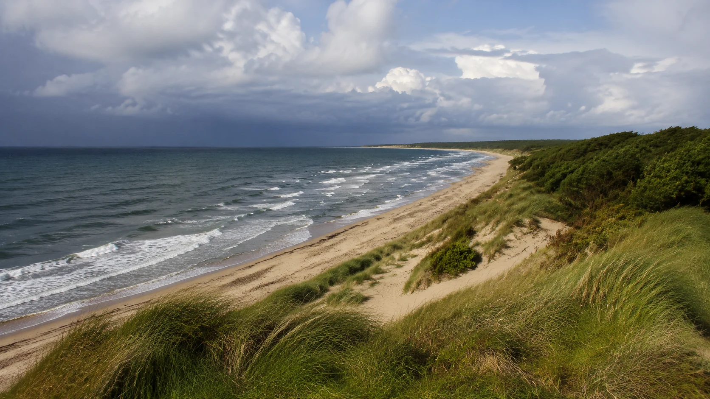
Longozun gölgeli dünyasından kıyıya çıktığınızda ufuk birden genişler. İğneada’nın uzun kumsalı, bir yanda Karadeniz’in hareketli suyu, öte yanda Istranca ormanlarıyla çevrilidir. Aynı coğrafyada bu kadar kısa mesafede mağara, dere, göl, su basar orman ve açık denizle karşılaşmak Kırklareli’nin en büyük sürprizlerinden biridir.
Karadeniz’in havası hızlı değişebilir. Açık bir gökyüzü kısa sürede bulutlanır; sakin görünen su sertleşebilir. Bu nedenle sahil yalnızca yazın yüzülen bir yer değil, her mevsim farklı yüzünü gösteren bir manzara alanıdır. Sonbaharda boşalan kumsal ve rüzgârın kum üzerinde bıraktığı çizgiler, fotoğraf için özellikle şiirli görüntüler sunar.
Kıyı kumulları sıradan kum yığınları değildir; bitki örtüsüyle birlikte deniz ve kara arasındaki hassas doğal seti oluşturur. Araçla kumsala girmemek, kumul bitkilerini ezmemek ve geride hiçbir atık bırakmamak gerekir. İğneada’nın sahili, ancak orman ve sulak alanlarla birlikte korunduğunda gerçek bütünlüğünü sürdürebilir.
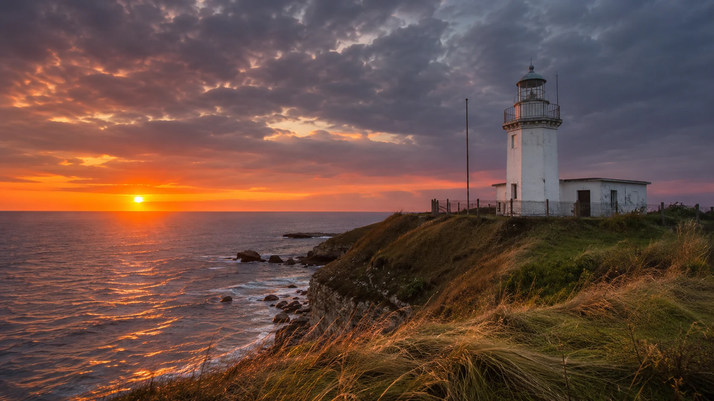
İğneada’dan birkaç kilometre kuzeydeki Limanköy’de, Karadeniz’e bakan rüzgârlı burunda tarihî fener yükselir. Gün batımına yakın saatlerde denizin rengi koyulaşır, otlar rüzgârla aynı yöne eğilir ve beyaz kule ufukta yalın bir işaret gibi belirir. Burası, ormanlardan başlayıp denize ulaşan yolculuk için güçlü bir finaldir.
Kıyı Emniyeti kayıtlarına göre fener 1866 yılında Sultan Abdülmecid döneminde Fransızlara yaptırılmıştır; bu yüzden halk arasında “Fransız Feneri” adıyla da bilinir. Karadeniz’in en batısındaki deniz feneri olarak tanımlanan yapı, dikdörtgen planlı hizmet binası ve silindirik kulesiyle denizcilik mirasının parçasıdır.
Fenerin karşısında durduğunuzda geride kalan rota zihinde yeniden belirir: Hızırbey’in taşı, Istranca’nın yaprakları, Dupnisa’nın yeraltı suyu, Kıyıköy’ün vadileri, dökümhanenin duvarları ve longozun yansımaları. Bütün bu görüntüler, Karadeniz’in geniş ufkunda tek bir hikâyeye dönüşür.
Kırklareli’nde yol, bir yerden başka bir yere gitmekten fazlasıdır; taşın hafızasından suyun sessizliğine doğru yürümektir.
Kırklareli, büyük sözler söylemeden etkileyen bir coğrafyadır. Burada dağlar göğe meydan okumaz; ormanla birlikte ağır ağır yükselir. Tarih, gösterişli saraylardan çok taş duvarlarda, kaya odalarında ve üretim yapılarında görünür. Deniz ise kıyıyı yalnız bırakmaz; dereler, lagünler ve longozlarla iç bölgelere kadar uzanır.
Bu yolculuktan geriye yalnızca fotoğraflar kalmaz. Dupnisa’da suyun taşı nasıl dönüştürdüğünü, Demirköy’de emeğin ormanın ortasında nasıl bir üretim dünyası kurduğunu, longozda yaşamın kara ile su arasındaki ince dengede nasıl sürdüğünü görürsünüz. İnsan, doğanın merkezinde değil; onun büyük ve hassas düzeni içinde küçük bir yolcu olduğunu yeniden hatırlar.
Kırklareli’ne yolunuz düşerse acele etmeyin. Bir ağacın altında durun, taşın yüzeyine uzun uzun bakın, göl kıyısında sesinizi alçaltın ve fenerin karşısında günün bitmesini bekleyin. Çünkü bazı yerler görülerek değil, yavaşlayarak anlaşılır.
Coğrafya, koruma statüsü ve tarih bilgileri 30 Ağustos 2026 tarihinde aşağıdaki resmî kaynaklardan doğrulanmıştır. Ziyaret saatleri ve alan erişimleri değişebileceği için gezi öncesinde güncel duyurular ayrıca kontrol edilmelidir.
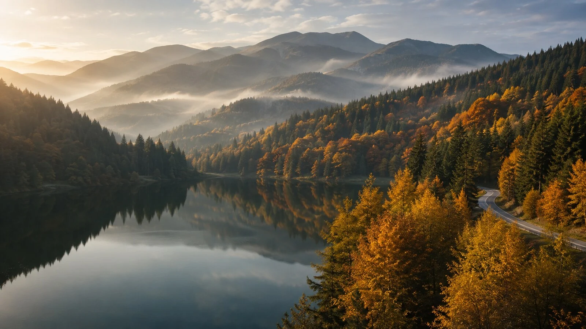
Sisli göllerden kaya evlerine, Osmanlı kasabalarından Köroğlu’nun yükseklerine uzanan on bir duraklık bir Batı Karadeniz yolculuğu.
Bolu’ya doğru yol alırken şehirlerin gürültüsü, ormanların koyu yeşiline karışarak geride kalır. Dağ geçitleri yükselir, sis yamaçlara iner ve su, bu coğrafyanın neredeyse her köşesinde başka bir biçimde görünür: Abant’ta geniş bir dağ gölü, Yedigöller’de ormanın içine serpilmiş küçük aynalar, Gölcük’te sakin bir gölet, Sülüklü Göl’de suyun içinden yükselen eski ağaç gövdeleri… Bolu, yalnızca görülecek yerlerin toplamı değil; su, orman ve dağ arasında kurulmuş uzun bir yavaşlama davetidir.
Bu davetin içinde tarih de doğadan ayrı durmaz. Seben’de kayaya oyulmuş yaşam izleri vadiye bakar; Mudurnu ve Göynük’te ahşap evler, çarşılar ve kuleler yüzyılların gündelik hayatını taşır. Aladağ’ın yaylaları ufku genişletirken Kartalkaya ile Köroğlu Dağları, Bolu’nun kışa ve yüksekliğe açılan yüzünü gösterir. Elinizdeki yazı, bu çok katmanlı coğrafyayı acele etmeden tanımak için hazırlanmış; her durağı kendi ışığı, sessizliği ve hikâyesiyle anlatan bir gezi rotasıdır.
Abant Gölü → Yedigöller → Gölcük → Sülüklü Göl → Akkaya Travertenleri → Seben Gölü ve Kaya Evleri → Mudurnu → Göynük → Aladağ Yaylaları → Kartalkaya → Köroğlu Dağları
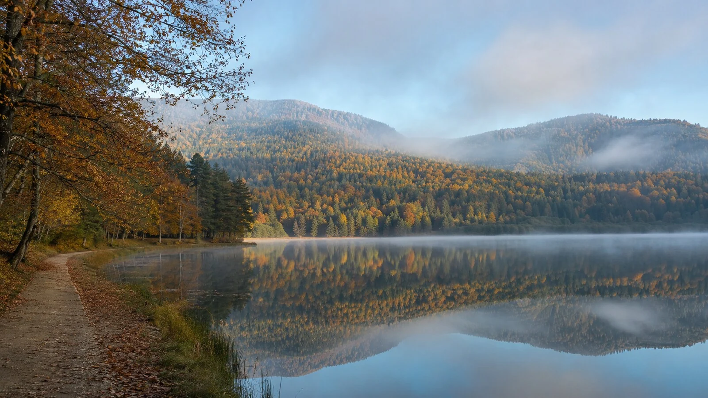
Abant’a sabah erken ulaşmak, gölü kalabalıktan önce kendi ritminde görme fırsatı verir. Su yüzeyinin üzerinde ince bir sis dolaşır; kayın, çam ve göknarların renkleri rüzgâr çıkmadan önce göle eksiksiz yansır. Kıyı boyunca ilerleyen yol, manzarayı bir anda tüketmek yerine parça parça açar. Bazen dalların arasından yalnızca küçük bir mavi görünür, birkaç adım sonra göl bütünüyle karşınıza çıkar.
Abant’ın koruma statüsü Haziran 2022’de millî parka dönüştürüldü. Resmî kayıtlarda 1.262 hektarı aşan alan; göl, orman, dağ peyzajı, günübirlik kullanım alanları ve çevredeki yaylalarla birlikte ele alınıyor. Bu bütünlük önemlidir, çünkü Abant yalnızca kıyısında fotoğraf çekilen bir su yüzeyi değildir. Gölü besleyen yamaçlar, bitki örtüsü ve yaban hayatı aynı doğal sistemin parçalarıdır.
Kıyı yürüyüşünde en güzel şey, hızınızı gölün hızına uydurmaktır. Seyir noktalarında kısa molalar verin, su kuşlarını uzaktan izleyin ve orman içindeki seslerin değişimini dinleyin. Hafta sonları yoğunluk artabildiği için sakin bir deneyim isteyenler hafta içini ya da günün ilk saatlerini seçebilir. Mevsime göre giriş ve kullanım koşulları değişebileceğinden yola çıkmadan önce resmî duyurulara bakmak iyi olur.
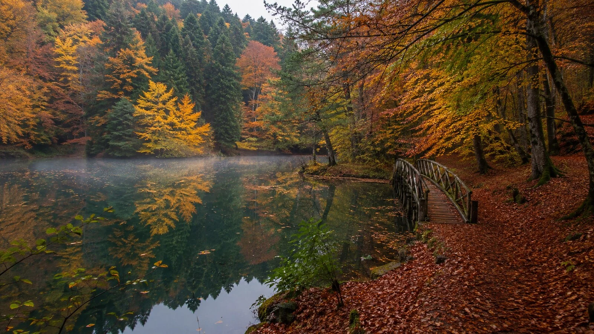
Yedigöller’e inen yol, ziyaretçiyi daha parka varmadan yolculuğun içine alır. Yüksek ormanlardan geçen virajlar boyunca sarı ve kızıl yapraklar koyu yeşil iğne yapraklı ağaçlarla karışır. Parkın içinde ise göller tek bir büyük manzara hâlinde değil, yürüdükçe birbirini izleyen sakin odalar gibi belirir. Büyükgöl, Deringöl, Seringöl, Nazlıgöl, Sazlıgöl, İncegöl ve Küçükgöl; her biri ışığa, bitki örtüsüne ve kıyı biçimine göre başka bir yüz gösterir.
Yedigöller 29 Nisan 1965’te millî park ilan edildi. Göllerin çevresindeki kayın, gürgen, meşe, kızılağaç, çam ve göknar toplulukları özellikle ekim aylarında olağanüstü bir renk geçişi oluşturur. Ancak buranın güzelliği yalnızca sonbahar paletinden gelmez. İlkbaharda su sesi ve taze yeşil, yazın serin orman gölgesi, kışın ise sessizlik manzarayı bütünüyle değiştirir.
Parkı gezmenin en iyi yolu, araçtan inip göller arasındaki belirlenmiş yürüyüş yollarına girmektir. Ahşap köprülerde, seyir alanlarında ve göl kıyılarında acele etmeden ilerleyin. Sonbahar hafta sonlarında araç ve ziyaretçi yoğunluğu artabilir; yol koşulları yağış ve kış döneminde değişebilir. Yola çıkmadan önce millî parkın güncel erişim bilgisini kontrol etmek, hava kararmadan dönüş planı yapmak ve ormanda ateş yakmamak gerekir.
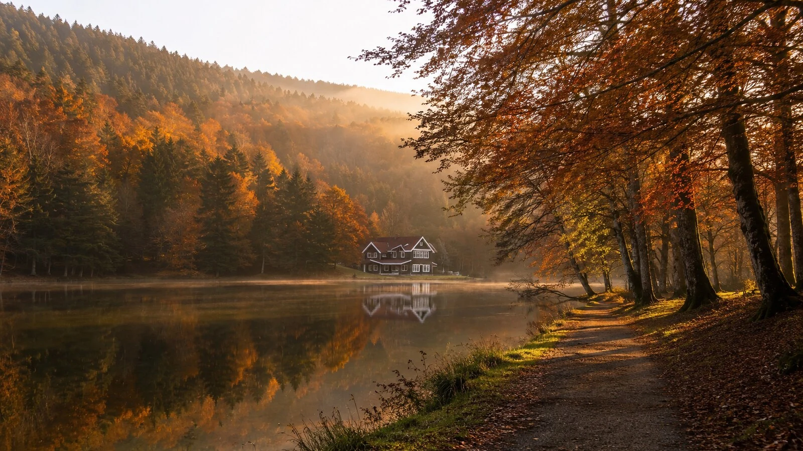
Gölcük’te manzara, kusursuz bir kartpostal düzeniyle karşılar insanı: küçük göletin karşı kıyısında ağaçların arasına yerleşmiş tarihî konukevi, suya eğilen dallar ve çevreyi bütünüyle saran orman. Fakat burayı güzel yapan yalnızca bu tanıdık görüntü değildir. Kıyı yolunda yürüdükçe göletin rengi değişir; bazen yeşil, bazen bakır, bazen de gökyüzünün kurşuni tonuna dönüşür.
Resmî park bilgisinde göl çevresindeki yolun araç trafiğine kapalı olduğu, yürüyüş ve bisiklet amacıyla kullanıldığı belirtiliyor. Bu karar, Gölcük’ün en güçlü tarafını korur: suyun çevresinde kesintisiz ve sakin biçimde dolaşabilmek. Yol boyunca farklı açılardan konukevine, ahşap iskelelere ve ağaç yansımalarına bakmak, kısa bir geziyi bile zenginleştirir.
Gölcük, Bolu rotasında dinlenme durağı gibi görünse de kendi başına uzun bir sabahı hak eder. Yağmurdan sonra toprak ve çam kokusu belirginleşir; kışın kar, görüntüyü neredeyse siyah-beyaz bir fotoğrafa çevirir. Piknik ve dinlenme alanlarını kullanırken göl kıyısını temiz bırakmak, yaban hayvanlarını beslememek ve belirlenen patikaların dışına taşmamak, bu küçük ama çok sevilen alanı korumanın en basit yoludur.
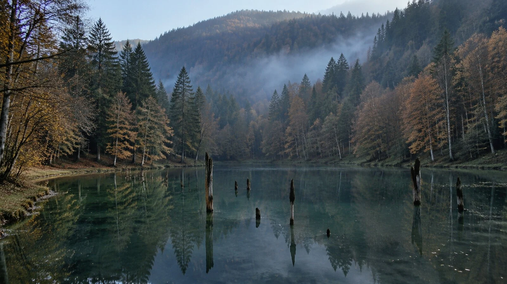
Sülüklü Göl’e yaklaştıkça asfaltın düzeni yerini daha tenha orman yollarına bırakır. Göl kıyısında ilk dikkat çeken şey, suyun içinden yükselen yaşlı ağaç gövdeleridir. Hareketsiz yüzeyde gövdelerin yansımaları aşağı doğru uzar; sisli bir sabah bu görüntü, ormanın iki kat derinleştiği hissini yaratır. Burada gösterişli bir tesis düzeninden çok, doğanın kendi başına kurduğu sessiz bir sahne vardır.
Resmî tanıtımda gölün tektonik hareketlerin ardından çöken alanla ilişkili olarak oluştuğu ve ağaçların üst bölümlerinin su üzerinde kaldığı aktarılıyor. Çevrede karaçam, sarıçam, göknar, kayın, meşe, gürgen, akçaağaç ve kızılağaç gibi pek çok tür bir arada bulunur. Bu zengin doku, gölü yalnızca fotojenik değil, ekolojik bakımdan da değerli kılar.
Sülüklü Göl, hazırlıksız gidilecek bir şehir parkı değildir. Orman yolu, yağış ve mevsime göre zorlaşabilir; telefon erişimi ve hizmetler sınırlı olabilir. Yakıt, su, uygun ayakkabı ve hava durumuna göre giysi planı yapmak gerekir. Göl çevresinde yüksek ses çıkarmadan yürümek, suya girmemek, kamp ve ateş kuralları için güncel resmî bilgiyi kontrol etmek en doğru yaklaşımdır.
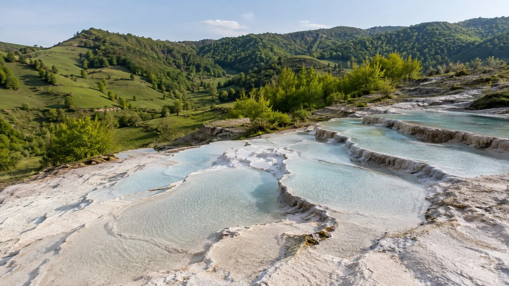
Bolu’nun orman ve göl manzaraları arasında Akkaya Travertenleri beklenmedik bir beyazlıkla ortaya çıkar. Mineral bakımından zengin su, yamaç üzerinde küçük basamaklar ve havuzlar oluşturur; açık renkli yüzeyler çevredeki yoğun yeşille güçlü bir karşıtlık kurar. Bu yüzden Akkaya’ya varmak, sanki Batı Karadeniz’in renk paletinde aniden başka bir sayfa açmak gibidir.
İl Kültür ve Turizm Müdürlüğü, travertenleri Bolu’nun yaklaşık 10 kilometre güneybatısında, Mudurnu yolu üzerinde tanımlıyor. Ana oluşumun doğu-batı yönünde yaklaşık 250 metre uzandığı, bunun batısında yaklaşık 50 metrelik başka bir oluşum daha bulunduğu belirtiliyor. Ölçeği Pamukkale’den küçük olsa da ormanlık tepelerle kurduğu ilişki Akkaya’ya bütünüyle kendine özgü bir görünüm kazandırır.
Traverten yüzeyleri hem kaygan hem de hassastır. Belirlenmiş kullanım alanlarının dışına çıkmamak, mineral tabakaları kırabilecek davranışlardan kaçınmak ve çevreyi temiz bırakmak gerekir. Fotoğraf için sabah ya da akşamüstü ışığı, beyaz yüzeylerdeki ayrıntıları daha iyi gösterir. Yaz aylarında alan daha yoğun olabileceği için sakinlik arayanlar serin mevsimleri ve hafta içini tercih edebilir.
Seben’e doğru ilerlerken Bolu’nun göllü ve ormanlı yüzüne yeni bir unsur eklenir: kayaya oyulmuş yaşam izleri. Solaklar, Muslar, Çeltikdere, Uludere, Hoçaş, Kaşbıyıklar ve Yuva çevresindeki vadilerde, kaya kütlelerinin yüzeyine açılmış çok katlı mekânlar görülür. Uzaktan küçük karanlık pencereler gibi duran boşluklar, yaklaştıkça odalara, geçitlere ve bir yerleşim düzeninin izlerine dönüşür.
Resmî ilçe tanıtımında bu alanların ilk Hristiyanlık döneminde yerleşim amacıyla kullanıldığı, Çeltikdere Vadisi’nde Bizans kilisesi kalıntısının bulunduğu aktarılıyor. Kaya evlerinin hemen çevresindeki vadiler, Taşlıyayla göleti ve Seben Gölü olarak anılan su manzarası, kültürel mirasla doğayı aynı rota içinde buluşturur. Bir tepeden bakıldığında oyulmuş kaya yüzeyi, tarım alanları, meyve bahçeleri ve göl birbirini tamamlar.
Bu yapılar bir eğlence parkı değil, aşınmış ve korunması gereken tarihî mekânlardır. Güvenli güzergâhların dışına çıkmamak, yüksek oyuklara tırmanmamak, kaya yüzeylerine yazı yazmamak ve hiçbir parçayı yerinden oynatmamak gerekir. Seben’i ağır adımlarla gezmek, yalnızca manzarayı görmek değil; insanların yüzyıllar önce doğanın biçimine uyum sağlayarak nasıl yaşam alanları kurduğunu düşünmek demektir.
Mudurnu, iki yamacın arasına dikkatle yerleşmiş bir kasabadır. Beyaz cepheli, ahşap karkaslı evler kırmızı kiremitli çatılarıyla vadi boyunca sıralanır; dar sokaklar çarşıya, camilere, hamamlara ve yamaçtaki saat kulesine bağlanır. Burada tarih, tek bir anıtın içine kapanmaz. Evlerin pencerelerinde, dükkânların kepenklerinde ve yokuşların gündelik ritminde yaşamaya devam eder.
UNESCO’nun Geçici Listesi’nde “Tarihî Ahi Kenti Mudurnu” adıyla yer alan yerleşim, eski ticaret yolları üzerindeki konumu ve Ahilik geleneğiyle öne çıkar. UNESCO kaydı, kasabanın çam ormanları ve termal kaynaklarla çevrili dar bir vadide kurulduğunu; Anadolu’nun doğusundan Bursa ve İstanbul yönüne uzanan tarihî güzergâhlarla ilişkisini anlatır. Bu nedenle Mudurnu’nun çarşısında yürümek, mimari kadar üretim ve dayanışma kültürünün izlerini de okumaktır.
Kasabayı tanımak için yalnızca ana caddeyi geçmek yetmez. Armutçular Konağı çevresinde, tarihî çarşıda ve saat kulesine çıkan yollarda zaman ayırın. Eski evler bugün de yaşam alanı olduğundan fotoğraf çekerken mahremiyete saygı gösterin. Ahşap dokuyu, kapı tokmaklarını ve taş zeminleri uzaktan izlemek; yerel esnaftan alışveriş yapmak, bu canlı mirasa daha nazik bir biçimde katılmanızı sağlar.
Göynük’e yaklaşırken önce tepede yükselen Zafer Kulesi görünür; ardından vadiye yayılan kiremit çatılar ve beyaz evler belirir. Yerleşimin ölçeği insana yakındır. Sokaklar aniden geniş meydanlara açılmaz, küçük dönüşlerle çarşıya, avlulara ve tarihî yapılara bağlanır. Evlerin önündeki “hayat” adı verilen avlular, mimarinin yalnızca dış görünüşten değil, iklime ve günlük yaşama uyumdan doğduğunu gösterir.
İl Kültür ve Turizm Müdürlüğü, Göynük’ün geleneksel konutları ve Osmanlı dönemi kent dokusuyla büyük ölçüde korunmuş bir yerleşim olduğunu belirtiyor. İlçeye hâkim tepedeki Zafer Kulesi, Sakarya Zaferi’nin anısına 1922’de yaptırılmıştır. Gazi Süleyman Paşa Camii’nin avlusundaki Akşemseddin Türbesi ise Fatih Sultan Mehmet tarafından 1464’te inşa ettirilmiş, taş ve ahşap işçiliğiyle öne çıkan önemli bir duraktır.
Göynük, 2017’de Cittaslow ağına katıldı. Bu “yavaş şehir” kimliği, ziyaretçiye de uygun bir öneri taşır: Arabayı bir kenara bırakıp sokakları yürüyerek keşfetmek, çarşıda durmak ve kuleye çıkarken kasabanın çatılarının adım adım açılmasını izlemek. Yakındaki Çubuk ve Sünnet gölleri rotayı uzatabilir; fakat yalnızca merkez için bile birkaç sakin saat ayırmak gerekir.
Bolu’nun ormanları kimi yerde gökyüzünü örter; Aladağ’a çıktığınızda ise ağaçlar geri çekilir ve ufuk genişler. Çayırlık alanlar, küçük göletler, sarıçam ormanları ve uzak sırtlar aynı manzarada buluşur. Bulutların gölgesi çayırın üzerinde ağır ağır yürürken, şehirde fark edilmeyen rüzgârın yönü ve havanın kokusu burada yolculuğun parçası olur.
İl Kültür ve Turizm Müdürlüğü, Bolu genelinde yaklaşık 300 yaylanın bulunduğunu; Aladağ Yaylaları’nın il merkezine yaklaşık 25 kilometre mesafede olduğunu belirtiyor. Aladağ Göleti ve izcilik kampı çevresi doğa yürüyüşü ve açık hava etkinlikleriyle anılıyor. Fakat yayla, yalnızca spor yapılan boş bir alan değildir; mevsimsel üretim, hayvancılık ve kırsal yaşamın da parçasıdır.
Yaylada gezerken özel mülkiyet ve yerel yaşam sınırlarına saygı göstermek, sürülere yaklaşmamak ve kapıları açık bırakmamak önemlidir. Hava, yüksek kesimlerde kısa sürede değişebilir; güneşli bir öğleden sonra sis ve sağanakla kapanabilir. Su geçirmez bir katman, sağlam ayakkabı ve çevrimdışı harita bulundurmak; ateş yakmamak ve bütün atıkları geri götürmek gerekir.
Kartalkaya’ya çıkan yol yükseldikçe kışın dili değişir. Bolu Ovası’nda yağmur olan hava, çam ormanlarının arasında kara dönüşebilir; dallar ağırlaşır, yol kenarındaki sesler yumuşar ve Köroğlu sırtları beyaz katmanlar hâlinde açılır. Kayak pistleri bu manzaranın en bilinen yüzüdür, fakat güneşin kar üzerinde kurduğu gölge ve ışık düzeni, spor yapmayan ziyaretçi için de etkileyicidir.
Resmî tanıtıma göre Kartalkaya, Bolu il merkezinin yaklaşık 38 kilometre güneydoğusunda ve 1.850–2.200 metre yükselti kuşağında bulunur. Alp disiplini, kayaklı koşu ve tur kayağı için uygun koşullarıyla tanınır. Kar sezonunun başlangıcı ve bitişi her yıl hava şartlarına göre değiştiği için geçmiş ortalamalara güvenmek yerine güncel kar, yol ve tesis bilgisine bakmak gerekir.
Kış yolculuğunda hazırlık, manzaranın kendisi kadar önemlidir. Kış lastiği, gerektiğinde zincir, dolu yakıt deposu ve yedek sıcak giysi olmadan yola çıkmayın. Yoğun kar, sis ve buzlanmada resmî yol uyarılarını izleyin. Dağda belirlenmiş güvenli alanların dışına çıkmamak, kapalı pist ve orman bölümlerine girmemek hem ziyaretçinin hem arama-kurtarma ekiplerinin güvenliği için temel kuraldır.
Bolu yolculuğunun sonunda göllerin kıyısından ayrılıp Köroğlu Dağları’nın açık sırtlarına çıktığınızda manzara yeniden değişir. Aşağıda koyu çam ormanları, yukarıda rüzgârın biçimlendirdiği çayırlar ve volkanik dağ kütlesi uzanır. Patika yükseldikçe yerleşimler küçülür; geriye bulutların hareketi, taşların rengi ve adımların düzenli sesi kalır.
Köroğlu adı yalnızca bir dağ silsilesini değil, Anadolu’nun sözlü kültüründe özgürlük ve başkaldırıyla özdeşleşen büyük bir anlatıyı da taşır. Bolu İl Kültür ve Turizm Müdürlüğünün proje sayfası; Dörtdivan, Kıbrıscık ve Seben kırsalını birleştirecek yürüyüş, kamp, dağ bisikleti ve arazi etkinlikleri ağına ilişkin bir “Köroğlu Rotası” çalışmasını anlatıyor. Bu bilgi, her parkurun bugün işaretli ve kullanıma açık olduğu anlamına gelmez; çıkıştan önce güncel rota durumunu doğrulamak gerekir.
Yüksek dağda yalnızca güzel hava planı yapılmaz. Sis, rüzgâr ve sıcaklık hızlı değişebilir; işaretlenmemiş patikalarda yön bulmak zorlaşabilir. Deneyime uygun güzergâh seçmek, yalnız yürümemek, dönüş saatini önceden belirlemek ve konum bilgisini bir yakına bırakmak önemlidir. Köroğlu sırtlarında gün batımını izlerken Bolu’nun bütün durakları zihinde yeniden belirir: suyun sessizliği, ahşap evlerin sıcaklığı ve ormanın koyu gölgesi aynı ufukta birleşir.
Bolu’da yol, bir gölden ötekine gitmek değildir; suyun sessizliğinden dağın rüzgârına doğru yavaş yavaş değişmektir.
Bolu, insanı tek bir büyük manzarayla değil, art arda gelen küçük dönüşümlerle etkiler. Abant’ta genişleyen su Yedigöller’de parçalara ayrılır; Gölcük’te sakinleşir, Sülüklü Göl’de eski ağaç gövdelerini saklar. Akkaya’da mineral beyazına dönüşen su, Seben’de vadinin tarımına ve göletlerine karışır. Her durak, aynı coğrafyanın başka bir cümlesidir.
Tarihî kasabalar bu doğa anlatısına insan ölçüsünü ekler. Mudurnu’nun çarşısı ve Göynük’ün avlulu evleri, bir yerin yalnızca korunarak değil, yaşanarak da geleceğe taşındığını gösterir. Aladağ, Kartalkaya ve Köroğlu ise yüksekliğin sorumluluğunu hatırlatır: Doğaya çıkmak özgürlük kadar hazırlık, dikkat ve saygı gerektirir.
Bolu’ya yolunuz düşerse durakları bir listeyi tamamlar gibi tüketmeyin. Bir göl kıyısında hava değişene kadar bekleyin, tarihî sokakta kapıların ayrıntılarına bakın, yaylada sesinizi alçaltın. Çünkü bu coğrafya en güzel görüntüsünü acele etmeyenlere verir.
Koruma statüsü, coğrafya, mesafe ve tarih bilgileri 30 Ağustos 2026 tarihinde aşağıdaki resmî ve birincil kaynaklardan doğrulanmıştır. Ziyaret saatleri, giriş koşulları, yol ve parkur erişimleri değişebileceği için gezi öncesinde güncel duyurular ayrıca kontrol edilmelidir.
Yazın son günleri yaklaşırken doğada sessiz fakat büyük bir hareketlilik başlar. Kırlangıçlar toplanır, leylekler yükselen sıcak hava akımlarını arar, sulak alanlar uzun yolculuk öncesinde dinlenen kuşlarla yeniden canlanır. Göç, doğanın en görkemli yaşam döngülerinden biridir.
Kuşların elinde takvim yoktur; fakat gün uzunluğunu, sıcaklığı, besin kaynaklarını ve mevsimin dönüşünü algılarlar. Göç öncesinde birçok tür daha yoğun beslenir. Vücutta biriken yağ, yüzlerce hatta binlerce kilometrelik yolculuğun yakıtıdır.
Termalleri kullanarak yükselir ve uzun mesafeleri süzülerek aşarlar.
Göç öncesinde tellerde ve açık alanlarda kalabalık gruplar oluşturabilirler.
V biçimli uçuş düzeni, birlikte hareket etmenin aerodinamik avantajlarından yararlanabilir.
Leylekler yükselen sıcak hava akımlarından yararlanarak irtifa kazanır, ardından kanatlarını açıp süzülür. Türkiye, Avrupa ile Afrika arasındaki konumu nedeniyle bu büyük göç hareketlerinin izlenebildiği önemli coğrafyalardan biridir.
Farklı türler Güneş’in konumu, yıldızlar, coğrafi işaretler, koku ve Dünya’nın manyetik alanına ilişkin ipuçlarından yararlanabilir. Göç tek bir pusulaya değil, evrim boyunca gelişmiş çok katmanlı bir yön bulma sistemine dayanır.
Anadolu, Avrupa, Asya ve Afrika arasındaki konumuyla göçmen kuşlara geçiş, beslenme ve dinlenme alanları sunar. Bir göl ya da sazlık, kuş açısından yalnızca manzara değildir; su, besin, güvenlik ve dinlenme alanıdır.
“Bir gökyüzüne baktığımızda bazen yalnızca kuşları değil, binlerce kilometrelik büyük bir yaşam zincirini görürüz.”
Bir tel üzerinde yan yana dizilmiş kırlangıçlar, daireler çizerek yükselen leylekler veya ufukta aynı yöne ilerleyen bir sürü… Belki de gördüğümüz şey yalnızca birkaç kuş değil, büyük bir yolculuğun başlangıcıdır.
Doğanın farklı ruh hâllerinden yedi özel kare. Her görsel kendi adı ve Troçki imzasıyla yer alır.
Türkiye’nin gölleri, vadileri, dağları, yaylaları ve eşsiz doğal manzaralarından seçilmiş kareler.
Kadim ormanlar, longozlar ve Trakya'nın yeşil nefesi.
OkuDOĞA • TRAKYA • KEŞİF
Eski kayın ormanlarından İğneada Longozları'na uzanan yeşil bir yolculuk.
Gezi yazısını oku →Trakya'nın kuzeyinde, İstanbul'un gürültüsünden sadece iki saat uzakta, zamanın yavaşladığı bir dünya var: Istranca Ormanları. Eski adıyla Yıldız Dağları.
Buraya ilk girdiğinizde anlıyorsunuz. Burası bildiğimiz bir orman değil. Yüzlerce yıllık kayınlar, gökyüzünü kapatan meşe ve gürgenler, ayaklarınızın altında onlarca yılda oluşmuş yosun halılar... Sessizlik o kadar derin ki, rüzgarın yapraklara değdiğini duyuyorsunuz.
Istranca, Kırklareli'nin kalbinden başlar, Demirköy ve Vize'yi içine alır, İğneada'da Karadeniz ile buluşur ve Bulgaristan'a kadar devam eder. Yaklaşık 300 kilometrelik dev bir yeşil koridor. En yüksek noktası 1031 metrelik Mahya Dağı.
Avrupa'nın en büyük ve en yaşlı kayın ormanlarından biri burada. İçinde karaca, kurt, çakal, 200'ün üzerinde kuş türü ve binlerce bitki var. İlkbaharda orman tabanı tamamen çiçeklerle kaplanıyor.
Ama kalbi başka bir yerde atıyor: İğneada Longoz Ormanları.
Longoz, Türkiye'nin Amazon'u. Dünyada çok nadir görülen bir sistem. İlkbaharda orman su altında kalıyor, ağaçlar suyun içinden çıkıyor, kökleri suyun altında nefes alıyor. Kayıkla aralarından geçerken kendinizi başka bir kıtada sanıyorsunuz.
Dupnisa Mağarası: Trakya'nın turizme açık tek mağarası. 3 milyon yılda oluşmuş sarkıtları ve yeraltı dereleriyle bambaşka bir dünya.
Şelaleler ve Köyler: Sislioba, Balaban, Beğendik gibi köylerin arasında tabelası bile olmayan şelaleler, kara fırında ekmek, keçi peyniri ve ormanla birlikte yaşayan insanlar var.
En güzeli sonbaharda gitmek. Ekim-Kasım'da renkler patlıyor. Trekking için Demirköy - İğneada arası en iyi rota. Sabah sisini yakalamak için gün doğumundan 40 dakika önce ormanda olmanız lazım. Kamp için İğneada Milli Parkı'ndaki izinli alanları kullanın.
Ormana bir şey bırakma, ormandan bir şey alma. Sadece iz.
Istranca bugün tehdit altında. Maden aramaları ve iklim değişikliği longozun suyunu her yıl biraz daha azaltıyor. Bu ormanı korumak sadece ağaç korumak değil; Trakya'nın suyunu ve nefesini korumak demek.
Bir ormanı sevmenin en iyi yolu onu tanımak. Istranca'yı tanımak için bir gün yetmez ama bir sabah sisi yeter.